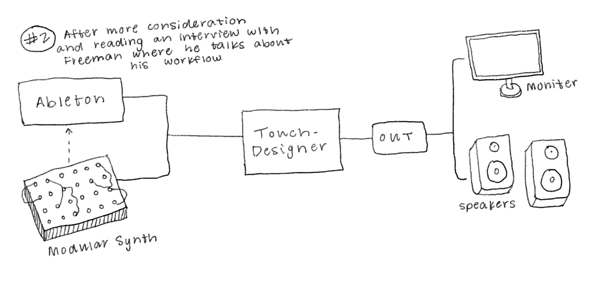
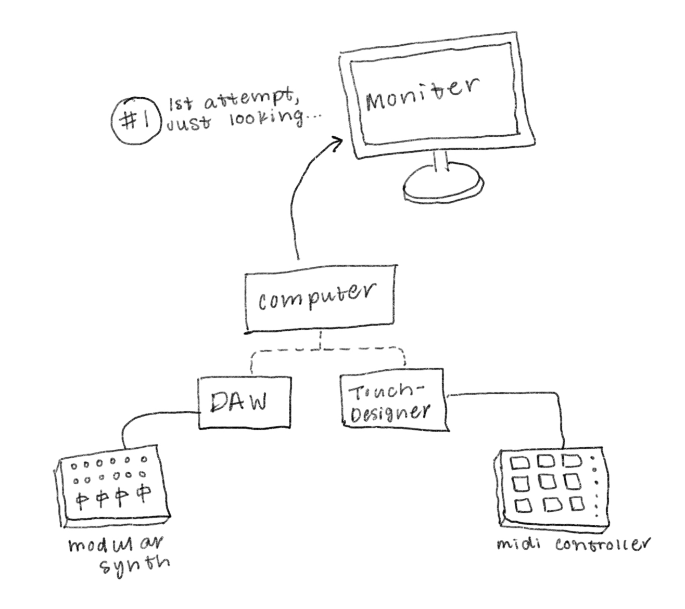

Documentation
 Diagramming
Create a cube with a wireframe MAT that some of our visual elements will exist inside of. Use Noise TOPs (using default sparse for now) with different seeds to animate the rotation of the cube (Later these rotations will be controlled by audio) 2
Cube set up is looking quite nice... Not perfect but it'll do. Now lets get into this strange 'blob wireframe' shape Using a sphere chop with noise Added a wireframe with a nice orange color. We'll let that noise run as is for now, but in the future will control its shape with audio Use an over top to put the sphere over the cube... looks like this:
Our blob needs some work but I'm jumping into some 2D elements. Next I'm adding some text TOPs to put in that flashing typography he's got going. Need to randomize the location and overlays of the type Set up: each letter (S-H-I-R-L) is put twice, each time with different location. One set of letters stays still, while the other's location is randomized with a noise chop. Used a comp CHOP with the 'multiply' setting to get the cut out effect
Next I added the vignette effect! Pretty simple - used ramp CHOP with the type set to 'circular'. Used some random noise to change its texture, and change the color so it was red and turned down the alpha on the inside color so it is transparent. Used an over TOP to overlay it.
Opened Ableton and made a lil' tracky track (spent way too much time on this and it sounds so wack)
Used this cam sequencer from Function Store to get that nice camera animation
Next I added the blue 'pattern' that appears on the cube and also flashes as a 2D overlay. I just used an animated noise texture as the color map for a constant MAT.
Touching up my Ableton track. Using my Akai Midi controllers to controller some audio effects in Ableton. I'm mostly using different kinds of grain delay
Linking Ableton to Touchdesigner so that the midi controller controls the audio, and the audio controls the visuals
Adding a few more finishing touches in TouchDesinger - more flashing shapes & text, and more texture
(image is unrelated to the work)